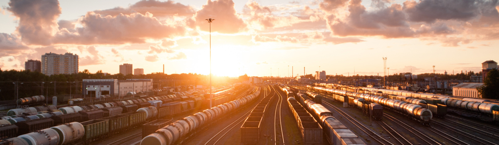

홈 > 회사소개 > 기업개요
기업개요
인사말
기업의 사회적 가치를 실현하는 국민기업 코레일유통
고객과 함께, 고객의 행복을 최우선 합니다.
대한민국 철도와 함께 성장해온 코레일유통은 한국철도공사의 계열사로 전국 기차역과 수도권 광역 전철역 등에서 스토리웨이 편의점과 상업시설 및 광고매체의 운영을 통해 철도 이용고객에게 공공편의를 제공하고 있습니다.
또한 코레일유통은 철도 관련 공공기관으로서 지역 특산품 자체 브랜드인 고향뜨락과 상생물류지원사업 및 청년창업 지원 매장 운영 등을 통해 동반성장과 상생경영을 실천해 기업의 사회적 가치를 실현하고 있습니다.
이제 코레일유통은 지난 80여년 역사를 넘어 국민과 고객 모두로부터 사랑과 신뢰받는 공공기관으로 변화하고자 합니다.
고객의 행복과 편의를 창조하는 국민기업, 국민들로부터 신뢰받는 공공기관이 될 것을 약속드리며, 고객 여러분의 변함없는 사랑과 관심을 부탁드립니다.
코레일유통주식회사 대표이사 조형익
가치체계
마음을 다하다 행복을 더하다
-
- 미션
- 철도와 함께 바르게 상생 다르게 혁신
-
- 비전
- 대한민국 유통의 바른 오늘 을 만듭니다.
- 다른 내일 을 만듭니다.
전략과제
고객에 대한 열정과 신뢰
- 고객중심
유통중심
역량강화 - 공공성 강화
및 사회적
가치 실현 - 전략
미래산업
다원화 - 지속가능
경영체계
구축